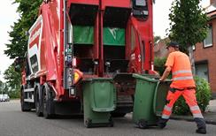

Welkom bij Gooi het in de bak!
Deze website is met speciale aandacht voor toegankelijkheid ontworpen,
zodat iedereen gemakkelijk informatie kan vinden over recyclen, waarom het belangrijk is en hoe je je afval kan scheiden.
Als je hulp nodig hebt bij het navigeren, aarzel dan niet om contact met ons op te nemen.
Je kunt veelgestelde vragen vinden en een vraag stellen op de faq pagina.
